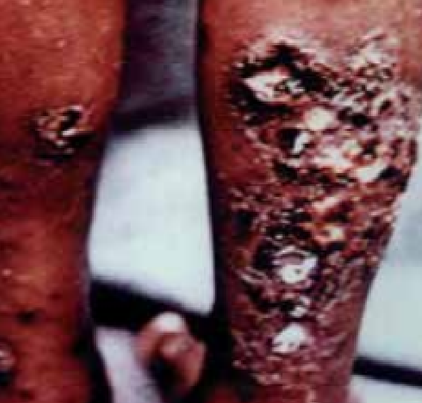
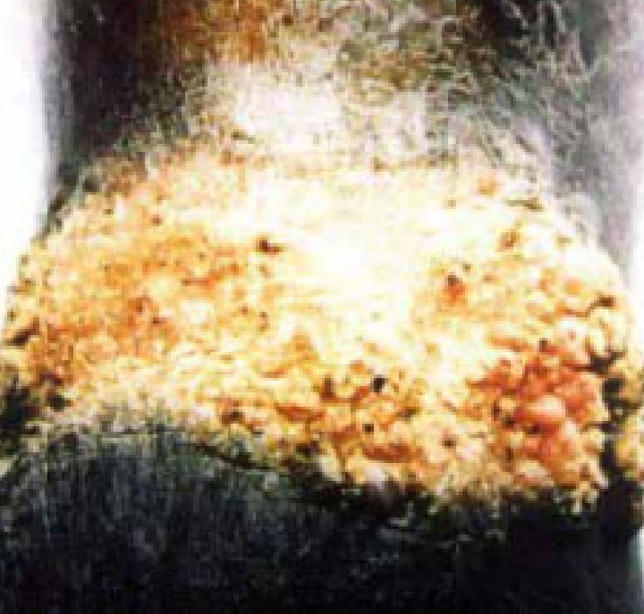
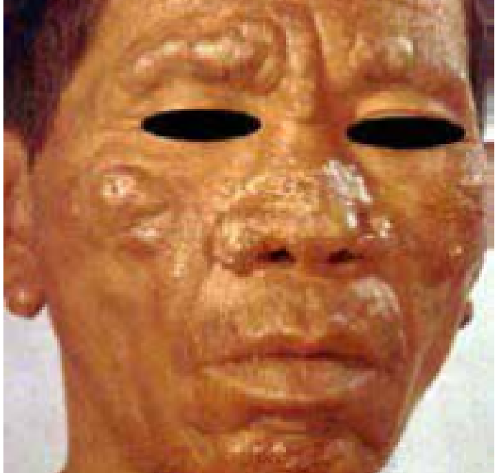
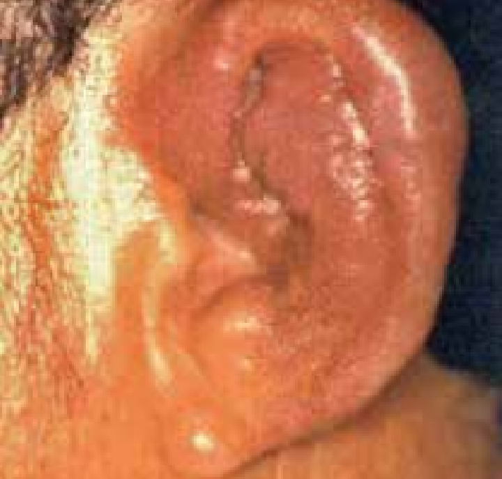
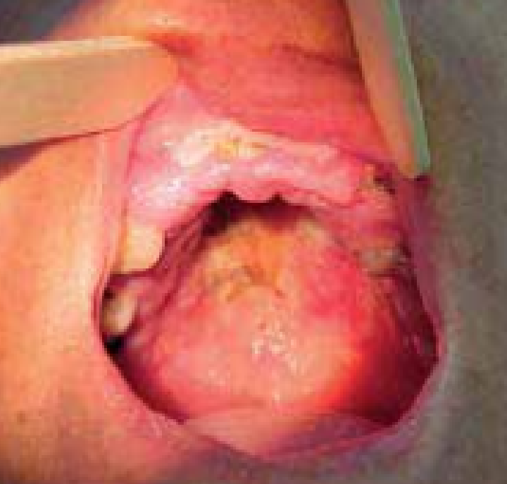
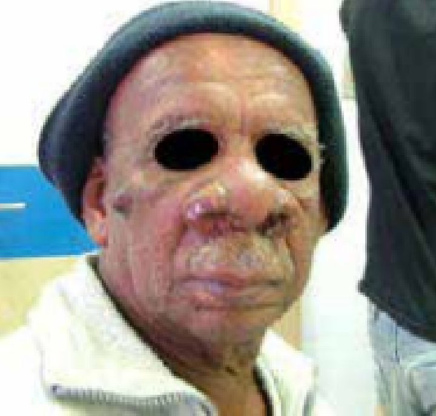
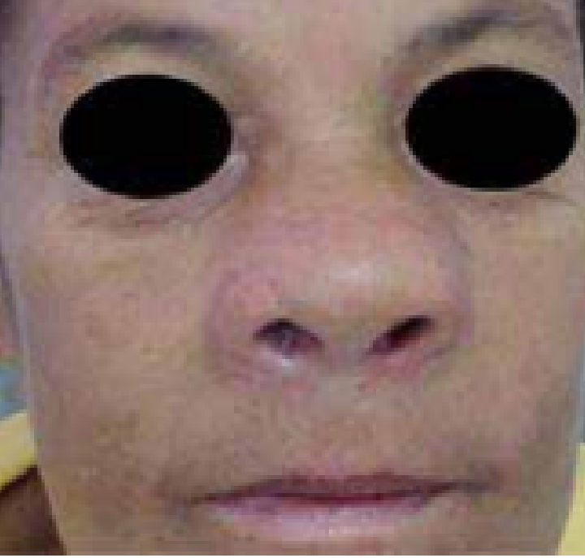
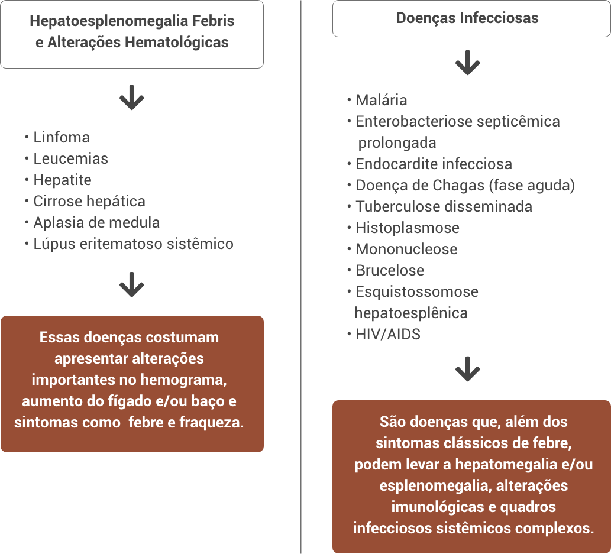

Aula 2
Diagnóstico diferencial das leishmanioses
O diagnóstico das leishmanioses é um processo complexo que envolve a avaliação clínica do paciente, a análise do contexto epidemiológico e a utilização de diferentes métodos laboratoriais. Como se trata de um grupo de doenças com múltiplas manifestações clínicas e agentes etiológicos diversos, é fundamental reconhecer que não existe um único teste ideal para todos os casos. Nesta aula, vamos explorar os principais métodos disponíveis para o diagnóstico das leishmanioses — incluindo técnicas parasitológicas, imunológicas e moleculares — além de destacar a importância do diagnóstico diferencial, que ajuda a distinguir a leishmaniose de outras doenças com sinais clínicos semelhantes. Também serão abordados os desafios e as escolhas diagnósticas frente às realidades regionais e estruturais, especialmente no contexto da saúde pública.
OBJETIVOS:
Ao final desta aula, esperamos que você seja capaz de:
- Reconhecer a importância do diagnóstico diferencial das leishmanioses visceral e tegumentar.
- Comparar os principais métodos laboratoriais para o diagnóstico das leishmanioses, reconhecendo suas vantagens, limitações e aplicações clínicas.
Diagnóstico diferencial da leishmaniose cutânea
As leishmanioses podem apresentar semelhanças com outras doenças. Portanto, é fundamental o diagnóstico correto das leishmanioses, garantindo a escolha do tratamento eficaz e evitando possíveis complicações e evolução da doença. A depender do tipo de manifestação clínica, as leishmanioses podem ser confundidas com outras doenças como tuberculose, esporotricose, carcinomas, hanseníase, linfomas, coccidioidomicose, entre outras. Portanto, doenças infecciosas ou não e que podem ser causadas por outros organismos como fungos e bactérias.
Com a popularização de ferramentas de inteligência artificial, modelos computacionais baseados em aprendizado de máquina vêm sendo desenvolvidos e testados para o diagnóstico automatizado de lesões cutâneas, a partir da análise de imagens. No entanto, essa evolução deve ser considerada uma estratégia complementar ao exame do paciente por um profissional médico. É também importante considerar a anamnese do paciente, quando possível, para elucidar casos em que o paciente se expôs à áreas e regiões endêmicas e com histórico de transmissão dos parasitos. Para o diagnóstico diferencial é importante considerar a avaliação clínica e as características da lesão. A seguir, são apresentadas doenças com manifestações clínicas semelhantes às leishmanioses, de acordo com as diferentes formas clínicas.
Nas imagens abaixo, você encontrará exemplos visuais de lesões e manifestações clínicas que podem ser confundidas com a leishmaniose cutânea em suas diferentes formas. Esses exemplos ilustram justamente os diagnósticos diferenciais apresentados acima e ajudam a compreender como determinadas doenças infecciosas, inflamatórias ou tumorais podem se assemelhar às lesões causadas pela Leishmania, reforçando a importância da análise clínica cuidadosa e da confirmação laboratorial. Observe as imagens com atenção, identificando semelhanças e diferenças importantes para a prática diagnóstica.
Tuberculose cutânea: presença de lesões ulceradas com crostas e secreção purulenta

Cromomicose: lesão verruco-vegetante em membro inferior

Hanseníase virchowiana: lesões pápulo-tubero-nodulares infiltrativas em toda face e orelhas, associadas a madarose

Edema com as características inflamatórias no pavilhão agudo auricular (Pseudomonas aeruginosa)

Diagnóstico diferencial da leishmaniose mucosa
Para a forma mucosa das leishmanioses, o diagnóstico diferencial deve ser feito com uma série de doenças infecciosas, inflamatórias, autoimunes, neoplásicas e traumáticas que afetam principalmente a região nasossinusal. A seguir, você poderá visualizar imagens ilustrativas dessas condições, que exemplificam como as manifestações clínicas podem se confundir com a leishmaniose mucosa. A observação cuidadosa dessas imagens pode auxiliar na identificação de sinais clínicos importantes e na diferenciação entre os diversos quadros apresentados a seguir.
LT forma mucosa tardia: lesão ulcerada do palato mole, com bordas infiltradas recoberta por exsudato

LT forma mucosa tardia: edema nasal com áreas de ulceração - crostas no local e edema no lábio superior

LT forma mucosa tardia: edema nasal com infiltração em asa e base do nariz

- Paracoccidioidomicose
- Rinosporidiose – infecção granulomatosa mucocutânea causada pelo protozoário Rhinosporidium seeberi, afetando principalmente as mucosas nasal e ocular levando à formação de lesões polipoides.
- Rinoscleroma – infecção granulomatosa crônica causada pela bactéria Klebsiella rhinoscleromatis que acomete o trato respiratório, especialmente o nariz, mas pode atingir laringe, traqueia e brônquios.
-
Entomoftoromicose – ou zigomicose, é uma infecção fúngica causada por fungos do solo e pode levar à obstrução nasal e rinite.
- Carcinoma epidermoide – câncer maligno, mais agressivo e invasivo do que o carcinoma basocelular. Afeta, principalmente, regiões do corpo mais expostas à radiação solar, mas pode também acometer pulmão, esôfago, canal anal e colo do útero.
- Carcinoma basocelular.
-
Linfomas – câncer que acomete linfócitos.
- Sarcoidose – acúmulo de células inflamatórias.
- Granulomatose de Wegener – doença autoimune que leva à inflamação de vasos sanguíneos afetando principalmente ouvidos, nariz, garganta, pulmões e rins.
- Rinite alérgica.
-
Sinusite.
- Hanseníase virchowiana.
-
Sífilis terciária.
- Perfuração do septo nasal traumática ou pelo uso de drogas.
-
Rinofima – apesar de benigna, é uma inflamação crônica que provoca o espessamento de tecidos e deformação do nariz em decorrência da hiperplasia e hipertrofia de glândulas sebáceas e do tecido conjuntivo, que pode levar a um aspecto de “elefantíase nasal”.
Diagnóstico diferencial da leishmaniose visceral
Assim como acontece com a leishmaniose visceral, várias outras doenças podem apresentar sinais e sintomas febre, hepatoesplenomegalia (aumento do tamanho do fígado e do baço) e alterações hematológicas. Assim, esses quadros precisam ser considerados no diagnóstico diferencial da leishmaniose visceral. A seguir são apresentados exemplos dessas doenças de acordo com a condição clínica ou causa.
Diagnóstico diferencial

A identificação da leishmaniose visceral exige olhar atento para o contexto epidemiológico, exames laboratoriais específicos e diferenciação cuidadosa com as doenças acima, pois muitas delas compartilham sinais semelhantes e exigem tratamentos completamente distintos.
Diagnóstico diferencial da leishmaniose visceral canina (LVC)
Independente da forma clínica, os cães apresentam um elevado parasitismo cutâneo, levando a manifestações clínicas variadas, incluindo a pele, ainda que classificada como leishmaniose visceral. Além disso, os cães com LVC podem apresentar anemia (redução da quantidade de hemácias no sangue), trombocitopenia (redução do número de plaquetas no sangue, o que aumenta o risco de hemorragias), hiperproteinemia (aumento anormal dos níveis de proteínas no sangue), hipoalbuminemia (redução dos níveis normais de albumina no soro), proteinúria (presença de grandes quantidades de proteína na urina) e azotemia (elevação dos níveis de compostos nitrogenados no sangue como ureia, ácido úrico, creatinina e proteínas). A seguir são apresentadas algumas enfermidades dermatológicas e de comprometimento sistêmico que devem ser incluídas como diagnóstico diferencial ou que ocorrem de forma concomitantes com a LVC.
Enfermidades Dermatológicas
- Dermatite trofoalérgica
- Dermatite alérgica a picada de pulgas
- Dermatite atópica
- Escabiose
- Demodicidose
- Lúpus eritematoso discoide
- Pênfigo foliáceo
-
Linfoma cutâneo

Enfermidades de Comprometimento Sistêmico
- Erliquiose
- Babesiose
- Hepatozoonose
- Toxoplasmose
- Neosporose
- Leptospirose
- Linfoma multicêntrico
-
Tripanossomíase americana
Além do diagnóstico diferencial das leishmanioses é importante identificar a espécie envolvida no caso, não apenas para a vigilância epidemiológica em um país de dimensões continentais como o Brasil, onde há regiões e coocorrências de diferentes espécies, mas também para direcionar ao melhor tratamento disponível. Por exemplo, a leishmaniose cutânea localizada causada por L. braziliensis tem o antimoniato de meglumina como fármaco de 1ª escolha para o tratamento, enquanto o isetionato de pentamidina é o fármaco para tratar a mesma condição, mas causada pela infecção com L. guyanensis. Esse fato tem direcionado diferentes estratégias de diagnóstico que incluam a identificação da espécie do parasito.
Comparação de técnicas para o diagnóstico das leishmanioses
Além do exame do paciente, avaliação clínica e características das lesões, os diagnósticos laboratoriais das leishmanioses podem ser realizados pela observação direta do parasito em amostras biológicas, mediante o cultivo do parasito ou ainda ser de forma indireta pela detecção de antígenos, anticorpos ou do material genético dos parasitos. Dessa forma, os métodos de diagnóstico laboratorial das leishmanioses podem ser agrupados em três categorias principais: parasitológicos, imunológicos e moleculares.
Além das vantagens e limitações de cada método, é importante lembrar que o sucesso do diagnóstico parasitológico depende não apenas da técnica utilizada, mas também da qualidade da amostra e da experiência do profissional envolvido. No exame direto, por exemplo, é necessário treinamento para reconhecer as formas amastigotas do parasito. Já o cultivo axênico, embora aumente as chances de detecção em casos inconclusivos, requer ambientes livres de contaminação e o uso de meios específicos, como o bifásico NNN associado a soluções líquidas como LIT, BHI ou Schneider. A histopatologia, por sua vez, auxilia não só na identificação da Leishmania, mas também no diagnóstico diferencial com outras infecções fúngicas, como a histoplasmose, que pode se confundir com a leishmaniose em cortes histológicos. Portanto, a escolha do método deve considerar o quadro clínico, o tipo de leishmaniose e os recursos disponíveis no serviço de saúde.
Com os avanços da biologia molecular, surgiram métodos altamente sensíveis e específicos para o diagnóstico das leishmanioses, especialmente úteis em casos de baixa carga parasitária ou quando os testes tradicionais não são conclusivos. Diferente dos exames imunológicos, que detectam a resposta do organismo à infecção, os métodos moleculares identificam diretamente o material genético do parasito. Embora exigentes em termos de infraestrutura e qualificação técnica, algumas dessas técnicas vêm sendo adaptadas para ampliar o acesso ao diagnóstico em regiões com menos recursos, com potencial para aplicação no campo (point-of-care) e em serviços descentralizados.
Apesar do avanço e da sofisticação dos métodos moleculares, sua adoção em larga escala ainda enfrenta desafios, especialmente em serviços públicos com recursos limitados. A PCR convencional, embora extremamente precisa, demanda equipamentos como centrífugas e termocicladores, além de etapas laboratoriais adicionais, como a eletroforese em gel para visualização dos resultados. Já a PCR em tempo real exige não só tecnologia mais avançada, mas também profissionais capacitados para interpretar os dados. Por outro lado, técnicas como a LAMP representam um avanço importante para a ampliação do acesso ao diagnóstico, por serem mais simples, rápidas e adaptáveis a diferentes contextos. A seguir, você encontrará uma tabela comparativa entre os principais métodos de diagnóstico parasitológico, imunológico e molecular das leishmanioses, que ajudará a visualizar de forma integrada as vantagens, limitações e aplicações de cada técnica.
Comparação das técnicas para o diagnóstico da leishmaniose
| Técnica | Vantagens | Limitações |
|---|---|---|
| Exame direto | Baixo custo, rápido, específico, simples | Baixa sensibilidade, necessidade de especialista |
| Cultivo axênico | Isolamento do parasito | Demorado (semanas) |
| Histopatologia | Específico, diagnóstico diferencial, informações do contexto tecidual | Laborioso (muitas etapas) |
| IDRM | Simples, compatível com inquéritos epidemiológicos | Demorado, positivo numa 2ª exposição, não distingue doença recente ou passada |
| RIFI | Simples, pode ser usada para casos humanos e de animais | Reações cruzadas |
| ELISA | Rápido e sensível, automatizável, compatível com triagens | Reações cruzadas e falso-positivos, menor especificidade que a RIFI |
| Teste rápido | Rápido, fácil execução, fácil interpretação, descentralização, simplicidade | Acurácia limitada, qualitativo |
| PCR convencional | Alta acurácia, detecção precoce, tipagem de espécies, compatível com diferentes amostras | Alto custo, centralizada |
| PCR em tempo real | Quantitativa, alta sensibilidade | Alto custo, centralizada, necessidade de pessoal especializado |
| LAMP | Simples, rápida, fácil execução, alta sensibilidade, descentralizada, fácil interpretação | Reação cruzada |
Parâmetros Utilizados para a Definição das Técnicas Diagnósticas
A escolha do teste de diagnóstico depende de diferentes contextos que incluem a condição clínica do paciente e a epidemiologia da doença, assim como podem ser selecionadas com base na sensibilidade e especificidade ou ainda se limitar pela disponibilidade de infraestrutura ou pela avaliação do custo-efetividade. Por exemplo, um caso suspeito de leishmaniose visceral em uma área endêmica pode requerer um teste rápido associado à confirmação pelo teste de exame direto a partir da análise microscópica da amostra de punção de medula óssea. Já em um caso suspeito de leishmaniose tegumentar, pode-se fazer a PCR do fragmento da lesão, e essa mesma biópsia ser utilizada para histopatologia. Em áreas de baixa prevalência são priorizados os métodos diagnósticos com > 90 % de sensibilidade.
É claro que essas escolhas dependem da infraestrutura para sua execução. Por exemplo, em hospitais, universidades e centros de pesquisas, é possível realizar uma reação de PCR ou isolar um parasito mediante cultivo axênico. Muitas vezes, é até possível verificar se aquela cultura isolada responde ao tratamento e identificar a espécie causadora. Essa realidade não é a mesma em áreas remotas e, muitas vezes, endêmicas para a doença. Nesses casos, os exames diretos e os testes rápidos serão mais adequados. Nesse tipo de cenário, a técnica de LAMP seria o diagnóstico molecular mais compatível para tal aplicação. A mesma lógica se aplica quando necessitamos testar de forma massiva uma determinada população. Nesses casos, ainda que haja uma sensibilidade limitada, o alto rendimento justifica a aplicação do teste, como por exemplo, ELISA ou testes rápidos.
A notificação dos casos é de extrema importância para a implementação de políticas públicas para o controle da doença. Limitações no diagnóstico podem não revelar casos assintomáticos, os quais podem atuar como reservatórios dos parasitos. É importante destacar que os indivíduos com infecção inaparente não são notificados e não devem ser tratados.

Conclusão
Nesta aula, vimos a importância dos diferentes métodos diagnósticos aplicados em casos de leishmanioses, assim como a melhor indicação e procedimento para cada caso. Os métodos de diagnósticos laboratoriais são extremamente importantes para definição das próximas ações de tratamento junto ao paciente. Na próxima aula, veremos como a imunopatogênese da doença define, em grande parte, se a doença será controlada ou agravada e quais as melhores formas de tratamento baseada na imunidade do paciente.
• Exercício de fixação
A escolha do teste diagnóstico pode depender de diferentes fatores. Nesse sentido, assinale a alternativa correta.